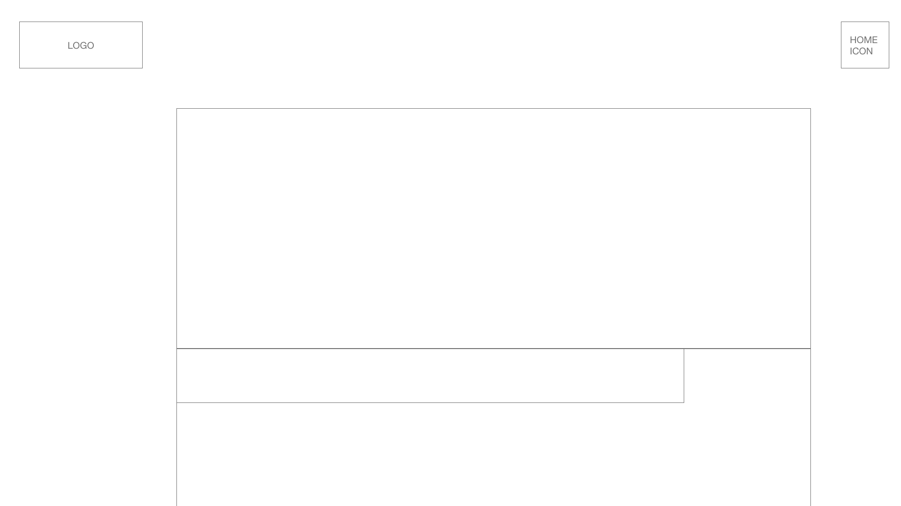

Reflections
Designing for Accessibility
After learning about accessibility practices and creating the user profile and journey for a blind user, I realised there were some significant things I needed to change about my planned website to make it accessible for people that use screen readers.
The main redesign focuses on the restaurant menu page. I had initially designed the website so that there would just be a PDF version of the restaurant’s in-store menu, however I quickly realised this could not be read by a screen reader. I needed to do a complete redesign of this page so that the menu would actually be displayed on the page, still with images, price range, etc, but in a way that it could be read out.
I added a nav section for the different menu categories (e.g. brunch, dinner, drinks) and made these nav headings link to their own area of the menu, to attempt to make it so the user could jump straight to their area of interest without needing to go through everything. Where there are images I have added an alt text and tried to make the descriptions give the sort of information a sighted-user would gather from them.
I had forgotten about using section tags instead of divs until right at the last minute, but I have added these to the restaurant page. In the future I would like to take more care to use these more often.
I also learned that using label tags for forms/inputs is better practice than the method I used on the homepage. I had never made anything like this before, so relied on the code I had found. I have used labels in the filters section on the next page as the instructions I found on how to do this were obviously better, but I would have liked to go back and fix this for the search section on the homepage.
Phone/Tablet Blog Wireframes

As my blog already has a relatively simple structure, it wasn't too difficult to make wireframes for a phone/tablet version. The main differences I have proposed are moving away from the nav bar, instead having buttons so things are easier to click. I've also moved everything to the top on the homepage so the user wouldn't need to scroll down when they arrive at the page.
The Value of Git for Designers Creating a Short-Notice Website Redesign Prototype

Git is a version control system which tracks and stores the full history of a software project. Git has many helpful features that could assist a design team working on a short-notice website redesign prototype.
The first valuable feature is the ability to “branch” off of a certain point. This feature allows a designer to work from one point and make as many changes as they like within their own branch, without disrupting the existing site. Many designers could branch off on their own and there would be no interference with anyone else’s work. When multiple people’s work does come back together, git can identify conflicting pieces of code and either resolve simpler things on its own, or provide an error message so people can correct the conflict. These features allow designers to have a divide and conquer approach, while still working as a team.
Another valuable feature is the ability to view history and work from any previous version of the site. This would allow designers to iterate and explore different options while making the website, but they could easily revert to a previous version of the site if need be. This saves time and means there is less lost work.
Another handy git feature that could be helpful for designers working in a team is the pull request review workflow. Pull requests allow everyone to review your code and discuss it before it is merged with other code/repositories. This makes it quick and easy for people to collaborate and discuss issues before it is finalised. Pull requests can also be used to simply start a conversation about a problem and it lets people overseeing a project keep track of changes.
All of these features would allow a design team prototyping a website redesign to work both collaboratively and independently to achieve great results in a short amount of time.
Blog Wireframes
I went through a few iterations for both the homepage and the reflections page while I was working on this blog. The pictures from my process are below.
Homepage


Reflections Page
